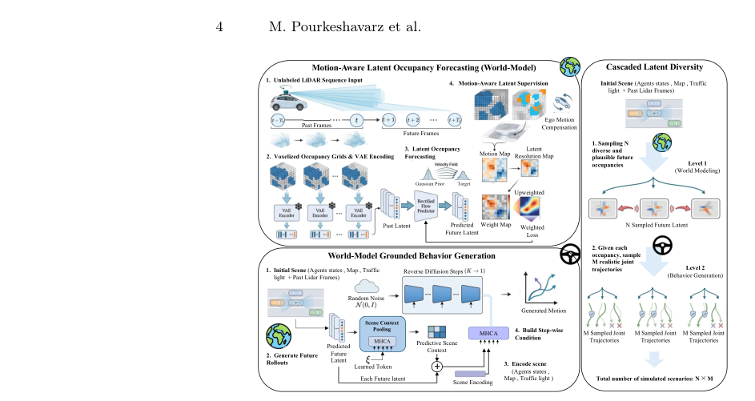
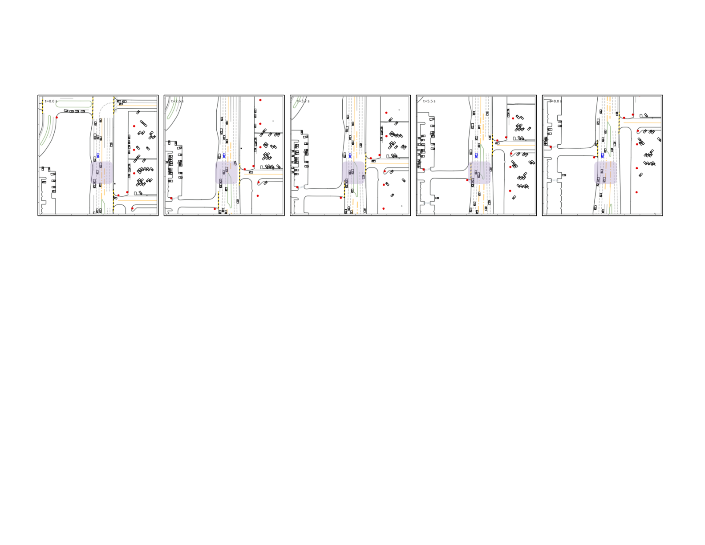

AutoWorld
简单摘要


为此，数据驱动的模拟方法受到越来越多的关注，因为它们可以克服启发式模拟器的关键局限性，例如对自我车辆行为变化的有限反应以及对记录轨迹的依赖。作者的总体方法路径是：已经提出了几种方法，包括扩散模型、下一个令牌预测方法及其基于微调的扩展，并在已建立的闭环行为生成基准上显示出有希望的结果。
另外一个关键点是，然而，当前的模拟范例有一个显着的局限性。从结果来看，为此，我们提出了 AutoWorld，一种新颖的交通模拟框架，它通过学习的预测世界模型来执行行为生成。
核心创新
这篇工作的创新不是简单堆模块，而是把问题重新定义为：多智能体交通模拟是开发和测试自动驾驶系统的核心。
另一项关键新意在于：最近的数据驱动模拟器取得了有希望的结果，但严重依赖于标记轨迹或语义注释的监督学习，使得扩展其性能成本高昂。这使方法不只是能生成结果，更能解释为什么会有效。
进一步看，在这项工作中，我们提出了 AutoWorld，一种交通模拟框架，它采用从 LiDAR 数据的未标记占用表示中学习的世界模型。这也是它和纯工程拼装方案拉开差距的地方。
技术细节
方法主干可以概括为：多智能体交通模拟是开发和测试自动驾驶系统的核心。其中最关键的环节是：最近的数据驱动模拟器取得了有希望的结果，但严重依赖于标记轨迹或语义注释的监督学习，使得扩展其性能成本高昂。这种设计直接带来的效果是：在这项工作中，我们提出了 AutoWorld，一种交通模拟框架，它采用从 LiDAR 数据的未标记占用表示中学习的世界模型。从训练与推理角度看，作者还专门处理了：给定世界模型样本，AutoWorld 构建从粗到细的预测场景上下文，作为多智能体运动生成模型的输入。这组公式用于定义模型中的变量关系和训练目标。建议先看左侧要预测的对象，再看右侧每一项如何约束优化方向。该公式用于定义核心计算关系。阅读时先看左侧目标量，再看右侧由 t、v、t、v 等变量构成的约束和聚合方式。该公式用于定义核心计算关系。阅读时先看左侧目标量，再看右侧由 L、E、z_0、z 等变量构成的约束和聚合方式。该公式用于定义核心计算关系。阅读时先看左侧目标量，再看右侧由 f、f、c、f 等变量构成的约束和聚合方式。这组公式用于定义模型中的变量关系和训练目标。建议先看左侧要预测的对象，再看右侧每一项如何约束优化方向。该公式用于定义核心计算关系。阅读时先看左侧目标量，再看右侧由 c、f、Q、h 等变量构成的约束和聚合方式。该公式用于定义核心计算关系。阅读时先看左侧目标量，再看右侧由 z、i、z、i 等变量构成的约束和聚合方式。该公式用于定义核心计算关系。阅读时先看左侧目标量，再看右侧由 f、i、j、k_f 等变量构成的约束和聚合方式。
$$ \mathcal{L}^{\text{world}}(\theta) = \mathbb{E}_{k_\mu,\, z_0,\, \tilde{z}} \left\| \mu_\theta(z_{k_\mu}, k_\mu, c^\mu) - (\tilde{z} - z_0) \right\|_2^2 . $$
$$ C_{t,\Delta}(v) = \mathbf{1}[Y_{t+\Delta}(v) \neq \tilde{Y}_{t\rightarrow t+\Delta}(v)] \cdot \tilde{M}_{t\rightarrow t+\Delta}(v) \cdot M_{t+\Delta}(v), $$
$$ \mathcal{L}^{\text{world}}(\theta) = \mathbb{E}_{k_\mu, z_0, \tilde{z}} \sum_{i,j} W_t(i,j) \left\| \mu_\theta(z_{k_\mu}, {k_\mu}, c^\mu)_{i,j,:} - (\tilde{z}-z_0)_{i,j,:} \right\|_2^2 , $$
$$ p_\psi\left(\tau_{{k_{f}}-1} \mid \tau_{k_{f}}, c^{f}\right):=\mathcal{N}\left(\tau_{k-1} ; f_\psi\left(\tau_{k_{f}}, {k_{f}}, c^f\right), \Sigma_{k_{f}}\right), $$
$$ g = \mathrm{MHCA} \big( \mathrm{Q}=\xi,\; \mathrm{K}=\mathrm{V}= \phi_1( \{\hat{z}_{t+e\delta}\}_{e=1}^{\left\lfloor T_f/\delta \right\rfloor} ) \big), $$
$$ c^{f}_t = \mathrm{MHCA} \big( \mathrm{Q}=h,\; \mathrm{K}=\mathrm{V}= \phi_2([\hat{z}_t; g]) \big), $$
$$ \hat{z}^{(i)}_{k_\mu -1 }=\mu_\theta(\hat{z}_{k_{\mu}}^{(i)}, {k_{\mu}}, c^\mu)-\gamma_{\mu}({k_{\mu}}) \nabla_{z_{k_{\mu}}^{(i)}} \log \mathcal{P}_{k_{\mu}}^{q, \text{world}}, \quad i=1, \ldots, N, $$
$$ \tau_{k_{f}-1}^{(i,j)} = f_\psi(\tau_{k_f}^{(i,j)}, k_f, c^{f(i)}) - \gamma_f(k_{f})\, \nabla_{\tau_{k_f}^{(i,j)}} \log \mathcal{P}_{k_f}^{q,\text{motion}} \quad j=1,\ldots,M, $$

实验结论
实验主要围绕一个核心问题展开验证：学习世界动态中的基础行为生成如何提高交通模拟的整体性能？。
从主要对比结果来看，利用越来越多的未标记 LiDAR 数据是否可以实现交通模拟性能的可扩展改进？。定性结果与消融实验进一步表明：我们的交通模拟框架建立在 WOSAC 基准之上。
理解评价
从整篇论文看，它的真正贡献是：最近的数据驱动模拟器取得了有希望的结果，但严重依赖于标记轨迹或语义注释的监督学习，使得扩展其性能成本高昂，而不是单纯把扩散模型继续微调。作者把问题落在“分布外驾驶场景如何稳定生成”这个更关键的缺口上。
它最有说服力的地方在于：为此，数据驱动的模拟方法受到越来越多的关注，因为它们可以克服启发式模拟器的关键局限性，例如对自我车辆行为变化的有限反应以及对记录轨迹的依赖。这说明论文的方法链路——3D 点云编辑、车辆补全、再到 RL 后训练——是前后闭合的，而不是各模块各自堆叠。
主要局限在于：为此，数据驱动的模拟方法受到越来越多的关注，因为它们可以克服启发式模拟器的关键局限性，例如对自我车辆行为变化的有限反应以及对记录轨迹的依赖。如果继续往前推进，一个自然方向是把更长时序、更低成本训练和更广泛的 OOD 场景覆盖一起纳入统一评估。
以下相关论文可作为延伸阅读：。